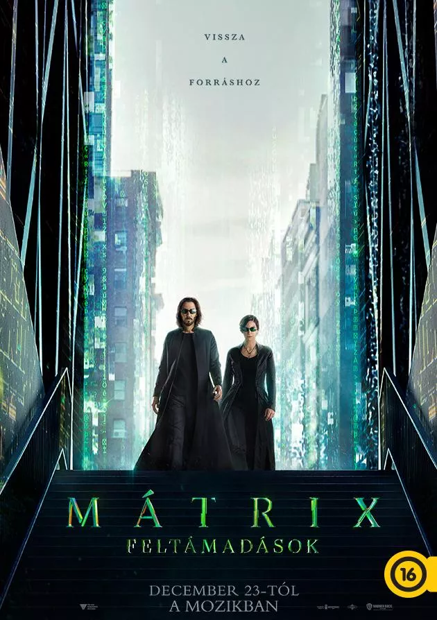

Mátrix: Feltámadások
sci-fi, akció
148 perc
Rendező: Lana Wachowski
Színészek: Keanu Reeves, Carrie-Anne Moss, Patrick Harris
Neo nem halt meg. A Mátrix működik, de megújult, erősebb és biztonságosabb, mint valaha. Az élet megy tovább. Vannak hősök, akik képesek a feltámadásra. Vannak szörnyű erők, amelyek ellen mindig újra harcba kell szállni. És van néhány nagy titok, amelynek segítségével a hősök vállalhatják a harcot, és szembeszállhatnak azzal, aki/ami az elpusztításukra tör. Legfeljebb maguk sem értik, hogy történik mindez.
| Időpontok: | 13:15 | 16:30 | 20:00 |